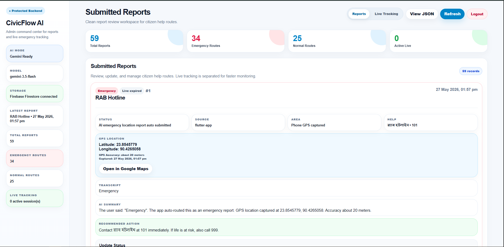

Admin command center for report review, GPS evidence, and live response monitoring.
The dashboard is the authority-side workspace of CivicFlow AI. When a citizen submits a civic problem or emergency report, the backend stores the report and shows it here for review. It displays the report type, emergency status, source, area, transcript, AI summary, recommended action, and GPS location.
This helps reviewers understand what happened, where it happened, and what action is recommended. The dashboard also separates submitted reports and live tracking so emergency cases can be monitored faster. This proves the app has a working backend review flow, not only a front-end demo.